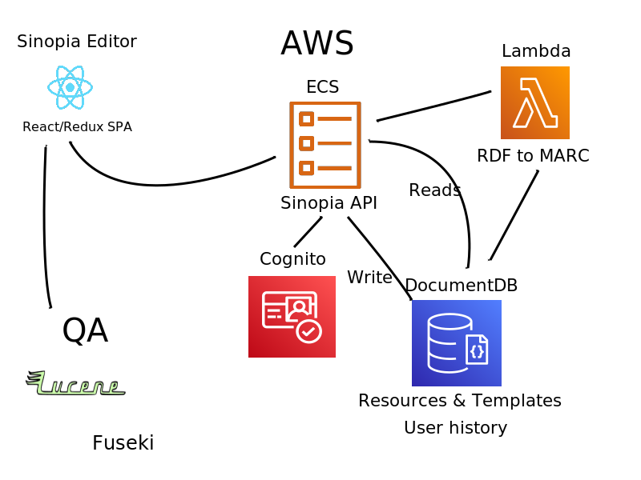

SWIB 2020 - Sinopia Linked Data Editor
Background
Funded by the Mellon T. Foundation, the Sinopia Editor is currently on version 3.5.2 and was developed primiarly by Stanford University Libraries.
Initially a fork of the original Library of Congress BIBFRAME Editor code base, Sinopia Editor was heavily refactored to use front-end React Javascript components.
Back-end RDF management was accomplished using Trellis Linked-Data Platform along with Elasticsearch search index.
Sinopia Stack deployed on Amazon Web Services (AWS)
Started
First production use of Sinopia to create RDF descriptions in 17 institutional co-horts
User interface improvements and established work-flows for JSON-based Resource Templates.
Migrated off of Trellis in favor of AWS DocumentDB.
Created an API providing CRUD operations along with user customization and BIBFRAME specific enhancements.
Current Architecture
The Sinopia technology stack has evolved over the three work-cycles but at the highest level is a client-side React single page application (SPA) connecting to a server-side API that is a Node.js application running on Amazon Web Services (AWS). There are three server-side helper applications that index incoming templates and resources, export resources, and offer a BIBFRAME RDF-to-MARC conversion.
